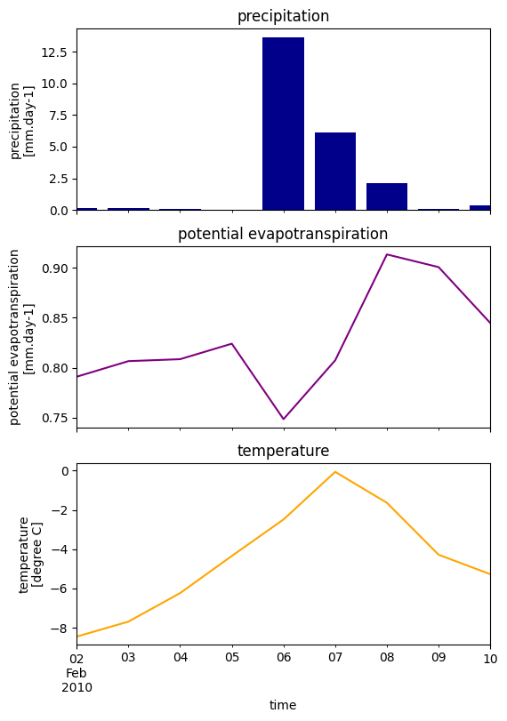

Tip
For an interactive online version click here:

Plot Wflow forcing#
HydroMT provides a simple interface to model forcing data from which we can make beautiful plots:
Forcing model layers are saved to model
forcingcomponent as adictofxarray.DataArray
Load dependencies#
[1]:
import xarray as xr
import matplotlib.pyplot as plt
import hydromt
from hydromt_wflow import WflowSbmModel
Read the model#
[2]:
root = "wflow_piave_subbasin"
mod = WflowSbmModel(root, mode="r")
2025-11-20 08:40:59,255 - hydromt.model.model - model - INFO - Initializing wflow_sbm model from hydromt_wflow (v1.0.0.dev0).
2025-11-20 08:40:59,255 - hydromt.data_catalog.data_catalog - data_catalog - INFO - Parsing data catalog from /home/runner/work/hydromt_wflow/hydromt_wflow/hydromt_wflow/data/parameters_data.yml
2025-11-20 08:40:59,286 - hydromt.hydromt_wflow.wflow_base - wflow_base - INFO - Supported Wflow.jl version v1+
2025-11-20 08:40:59,286 - hydromt.hydromt_wflow.components.config - config - INFO - Reading model config file from /home/runner/work/hydromt_wflow/hydromt_wflow/docs/_examples/wflow_piave_subbasin/wflow_sbm.toml.
Plot model forcing#
Here we plot the model basin average forcing.
[3]:
# read wflow forcing and compute the basin average
# NOTE: only very limited forcing data is available from the artifacts
ds_forcing = mod.forcing.data
ds_forcing = ds_forcing.mean(dim=[ds_forcing.raster.x_dim, ds_forcing.raster.y_dim])
[4]:
ds_forcing
[4]:
<xarray.Dataset> Size: 188B
Dimensions: (time: 9)
Coordinates:
* time (time) datetime64[ns] 72B 2010-02-02 2010-02-03 ... 2010-02-10
spatial_ref int64 8B 0
Data variables:
precip (time) float32 36B 0.1293 0.1466 0.09016 ... 0.06295 0.3835
pet (time) float32 36B 0.7911 0.8066 0.8086 ... 0.9006 0.8447
temp (time) float32 36B -8.449 -7.687 -6.234 ... -4.282 -5.272[5]:
# plot axes labels
_ATTRS = {
"precip": {
"standard_name": "precipitation",
"unit": "mm.day-1",
"color": "darkblue",
},
"pet": {
"standard_name": "potential evapotranspiration",
"unit": "mm.day-1",
"color": "purple",
},
"temp": {"standard_name": "temperature", "unit": "degree C", "color": "orange"},
}
[6]:
n = len(ds_forcing.data_vars)
kwargs0 = dict(sharex=True, figsize=(6, n * 3))
fig, axes = plt.subplots(n, 1, **kwargs0)
axes = [axes] if n == 1 else axes
for i, name in enumerate(ds_forcing.data_vars):
df = ds_forcing[name].squeeze().to_series()
attrs = _ATTRS[name]
longname = attrs.get("standard_name", "")
unit = attrs.get("unit", "")
if name == "precip":
axes[i].bar(df.index, df.values, facecolor=attrs["color"])
else:
df.plot.line(ax=axes[i], x="time", color=attrs["color"])
axes[i].set_title(longname)
axes[i].set_ylabel(f"{longname}\n[{unit}]")
# save figure
# fn_out = join(mod.root, "figs", "forcing.png")
# plt.savefig(fn_out, dpi=225, bbox_inches="tight")

[ ]: